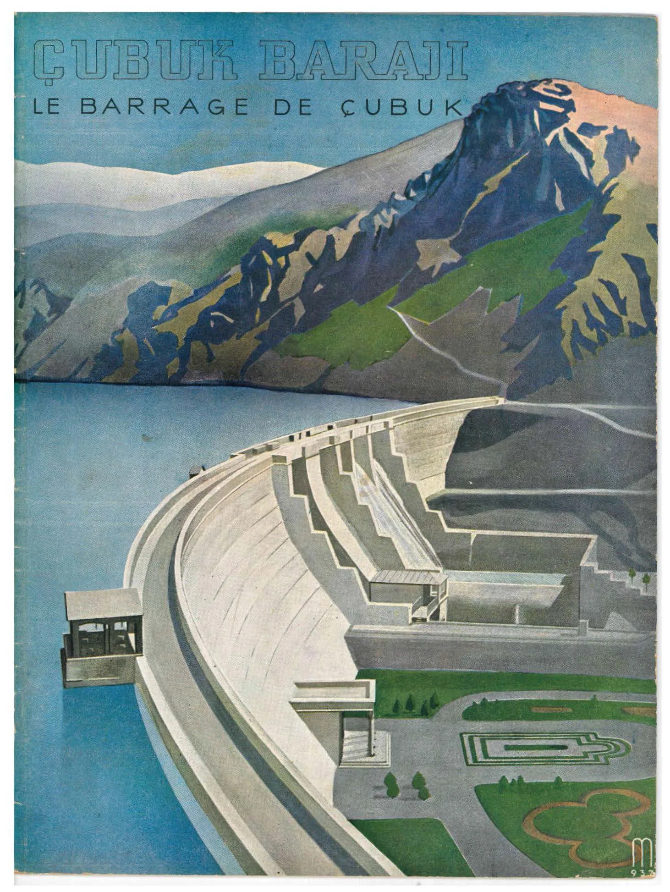
Source: Cover of Çubuk Barajı / Le Barrage de Çubuk (1939), published by T.C. Nafıa Vekâleti.

The Helical Metabolism of the Landscape
The spatial history of the site is not defined by its erasure, but by its incomplete, continuous transformation. The environment does not exist as a passive backdrop; rather, every material alteration is bound to its ecological origin, progressing not as a linear teleology, but as a circular completion. This asynchronous cycle operates through three interconnected phases:
Arkhe: The foundational bio-infrastructure and the first principle of the site. It is the pre-intervention state of biological homeostasis, where soil, matter, and non-human actors operate within an unbothered environmental metabolism. It represents the inherent, latent potential of the landscape before it is subjected to human-centric spatial discourse.
Tekton: The era of the founder, the master, and the builder. This is the forceful imposition of an architectural order upon the Arkhe. It represents the tectonic prowess materialized into infrastructure, where the landscape is engineered, segmented, and optimized for socio-spatial reproduction and urban modernization.
Entropy: The inevitable physical and systemic tendency toward natural (dis)order. As the hyper-engineered Tekton phase exhausts its environmental limits, the constructed space begins to fracture. Entropy is the utopian or dystopian breakdown of this human mastery, functioning as the ultimate equalizer that forces the landscape to return its borrowed matter to the soil.
Beginning with the foundational bio-infrastructure of the Arkhe, the landscape is actively produced and mobilized through the structural hegemony of the Tekton, only to inevitably fracture and dissolve via Entropy. This metabolic chain is profoundly interrelated; each phase is a dialectical necessity that takes root in the material conditions of its predecessor while actively setting the stage for its successor.The Arkhe provides the ecological substrate that the Tekton engineers into a second nature, a constructed environment that, upon reaching its material and systemic limits, collapses into an entropic state. Yet, Entropy is deeply generative, effectively composting the ruined infrastructure back into the soil to establish a new, historically altered Arkhe.
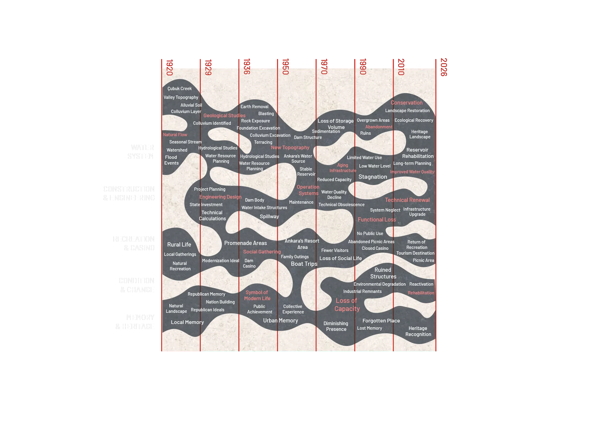
Technical Details of Çubuk 1 Dam
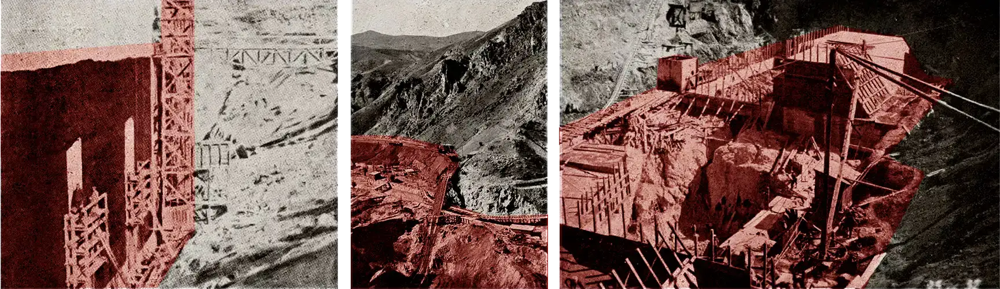
Source: Çubuk Barajı / Le Barrage de Çubuk (1939), Publication of the Ministry of Public Works of the Republic of Turkey. Image digitally edited by the authors.
The Çubuk basin's Arkhe is defined by an ephemeral, seasonal water system rather than abundant accumulation.
The dam's 700 km² catchment area is situated in a strictly water-scarce region, receiving an average annual precipitation of only ~250 mm (comprising both rain and snow).
- Contrasted against the national average of 550–600 mm, the decision to impose a massive infrastructure here highlights a deliberate modernization effort to capture and heavily regulate a limited natural resource for urban expansion.
The spatial ambition of the Çubuk Dam was fundamentally at odds with the environmental reality of its site. By imposing a massive infrastructure onto a low-precipitation basin, the modernization project demanded an extraction of water that pushed the regional ecosystem to the limits of its metabolic capacity, transforming a seasonal watershed into a heavily regulated urban reservoir.
Source: Çubuk Barajı / Le Barrage de Çubuk (1939), Publication of the Ministry of Public Works of the Republic of Turkey. Image digitally edited by the authors.
The site's geology did not passively accept construction; the initial bedrock found at a 17m depth was weathered and saturated with pyrite (FeS), actively threatening the durability of any intervention.
Bypassing further weak structural layers at 20m, engineers were forced to excavate through soft, dissolving kaolin down to 28–33 m to find stable ground, requiring extensive tie-back retaining walls to safely enforce the Tekton.
- The sheer material resistance of the soil altered the architectural outcome; while designed visually as an arch dam, the structure relies fundamentally on gravity to transfer its load, using unyielding mass to conquer the site.
Source: Çubuk Barajı / Le Barrage de Çubuk (1939), Publication of the Ministry of Public Works of the Republic of Turkey. Image digitally edited by the authors.
To stave off the inevitable Entropy threatened by the pyrite-rich soil, trass was actively added to the concrete mix to neutralize deterioration, while copper waterstops were embedded at the joints to enforce absolute watertightness.
A highly controlled drainage system, cast from permeable, sand-free concrete and arrayed in a grid, was installed 1.75 m behind the upstream face to manage hydrostatic pressure and internal water flows.
- The concrete itself was engineered to strict German Railway standards, comprising 390 L of fine aggregate and 530 L of coarse aggregate, with clay content scrubbed below 3% to create a highly regulated material order.
To sustain this structural hegemony and delay the inevitable onset of Entropy, the dam required a highly specific, engineered second nature. This system functions as the dam's artificial metabolism, continuously managing hydrostatic pressure and internal flows to prolong the survival of the Tekton against the relentless, dissolving forces of the landscape.
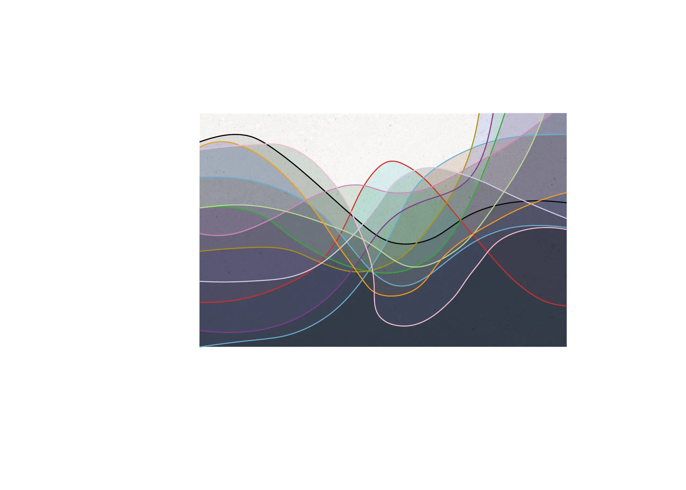
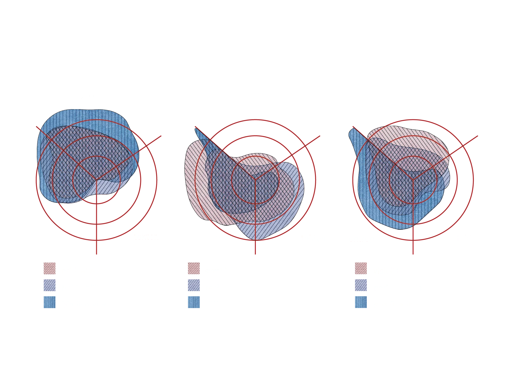
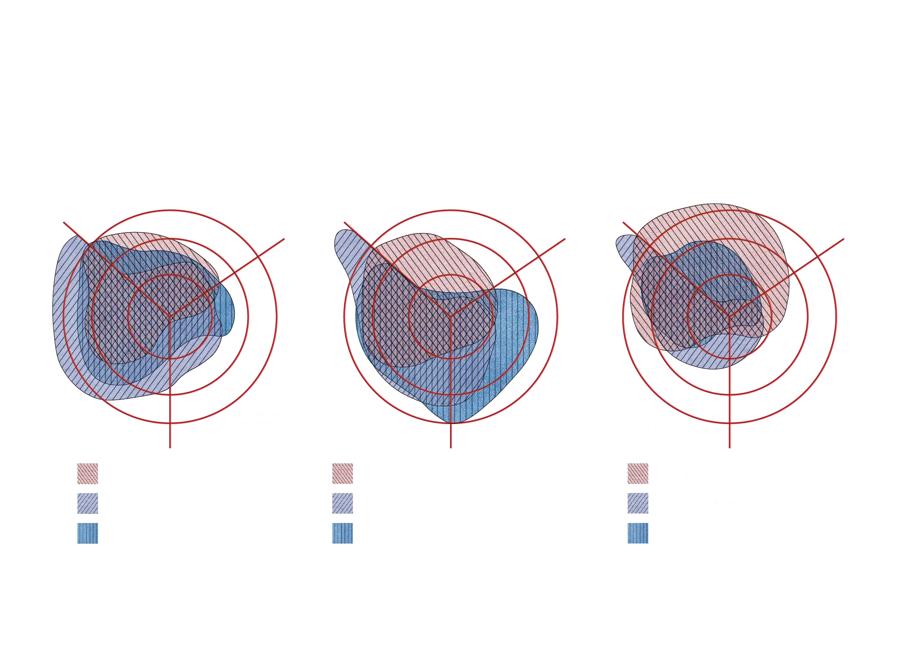
Site Evolution Through Time
Source: Google Earth Pro historical imagery, accessed June 2026. Compilation and animation by authors.
This macro-spatial timelapse captures the helical metabolism of the Çubuk Valley, visualizing the landscape's continuous transformation from an open ecological network into an engineered fix. It begins with the unconstrained Arkhe, representing a state of pure biological homeostasis. In this phase, the natural valley topography dictates high biological permeability and uninterrupted hydrological flow, allowing the bio-infrastructure of the soil to breathe and metabolize without constraint.
The aggressive onset of the Tekton phase overrides this baseline. Driven by state investment and the modernization ideal, the dam infrastructure and creeping urbanization enclose the site. This tectonic expansion actively destroys environmental homeostasis, spiking spatial differentiation and restricting the permeability of the critical zone. This in turn forces the active pedogenesis of the soil either underground or submerges it underwater, masking the biological labor required to sustain the natural environment.
However, as the timeline progresses toward environmental degradation and functional loss, the imagery reveals the slow, relentless transition into Entropy. This phase fundamentally rejects any narrative of human exceptionalism in environmental design. The expanding footprint of sedimentation within the reservoir and the visible pushback of the ecosystem at the edges highlight the site's inherent resilience. On a macroscopic scale, the constructed environment is continually being digested; the rigid cells of the urban and infrastructural grid are broken down, proving that human mastery is ultimately composted back into the earth to synthesize the next cycle of life.
Diagramatic Abstraction of Ground Layers
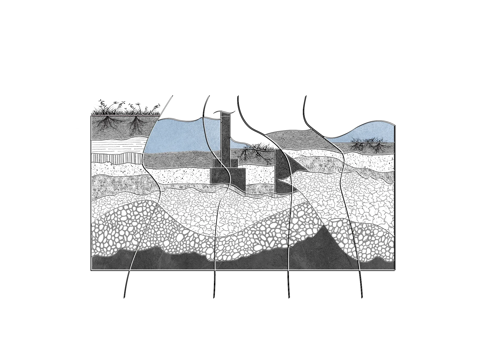
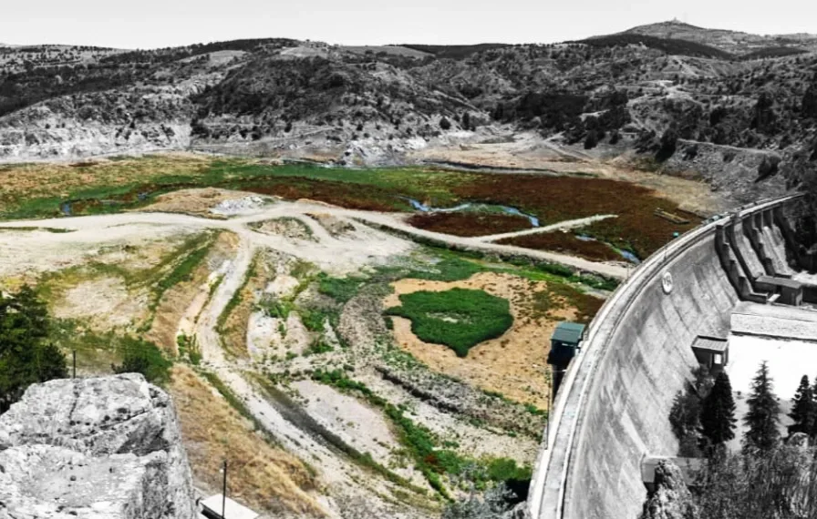
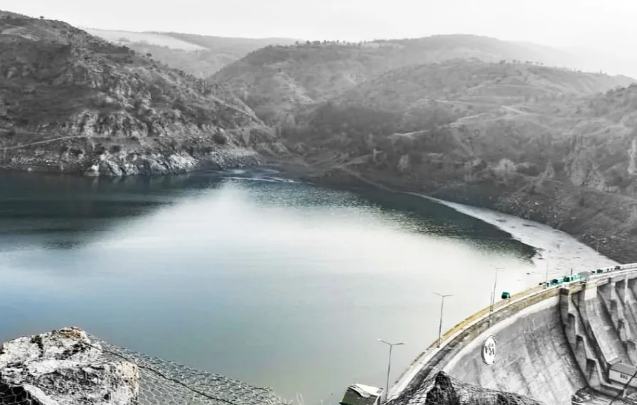
Source: Çubuk Haber (2021), "Türkiye's First Dam, Çubuk-1, Holds Water Again After 27 Years" ( https://cdn1.ntv.com.tr/gorsel/nNXov47LW0GMF8_G_swnPQ.jpg?width=960&mode=crop&scale=both ). Image adapted and digitally processed by the authors.
The juxtaposition of a fully submerged reservoir against its completely dry basin physically maps the landscape's inevitable transition from tectonic mastery to entropic release. The human-imposed water mass acts as an artificial seal, suffocating the natura and forcing the soil's bio-infrastructure into a state of suppression . However, when this artificial hydrology fractures and the water recedes, the illusion of permanence is shattered; the newly exposed, sediment-heavy ground immediately metabolizes the legacy of the Tekton to synthesize the foundation of a new Arkhe.
Concluding Helix
Through this continuous dialectic, the site forms a spatial helix that rises by layering upon itself. After multiple full cycles, the underlying mechanism of socio-spatial reproduction remains an absolute constant, even as the physical context and material realities drastically shift. Ultimately, the metaphorical cylinder of the site acts as a stable, geological memory for this environmental history.
No matter the scale or intensity of the spatial fixes we impose, every newly deposited and engineered layer eventually metabolizes, projectively tethering the newest spatial reality to the very ground where it originated.
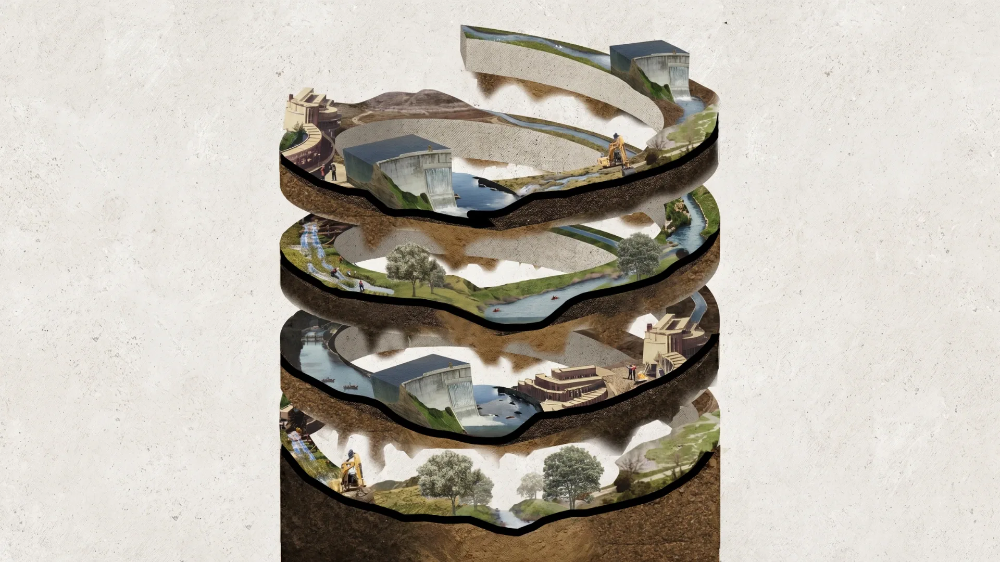
Collage by authors, 2026.